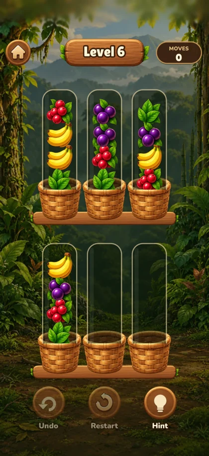

Sort fruit.
Grow a forest.
A relaxing fruit-sorting puzzle inspired by a journey to Rwanda. Sort matching fruit into baskets, earn Leaves, and grow a virtual forest home for a gorilla family.
The iPhone app is in preparation.
One good move.
A little more green.
Tap a basket, then tap an empty basket or one with the same fruit on top. Gather each kind together to finish the puzzle.
Play through 20 puzzles in the Rwanda chapter. First-time completions restore the forest and earn Leaves. Spend your Leaves on five improvements in Forest Home, from a fern clearing to a thriving canopy.
Meet the gorilla family along the way, give them names of your own, and browse 15 short mountain-gorilla facts in the Family screen.
Inspired by Rwanda.
Creator Alon Iter conceived Gorilla Bloom after a personal trip to Rwanda deepened his appreciation for mountain gorillas and their habitat. Independently created with AI-assisted development and artwork tools, the game invites puzzle lovers and wildlife enthusiasts in Rwanda and around the world to discover a little more about gorilla life.
The forest restoration is virtual. Gorilla Bloom has no conservation-organization affiliation and does not fund real-world conservation.

A quiet place to play.
The iPhone game works offline, saves progress on your device, and has no accounts or advertising.
Read the privacy policyA helping hand.
Learn the sorting rules, find tips for a tricky puzzle, or get help with your saved progress.
Visit support